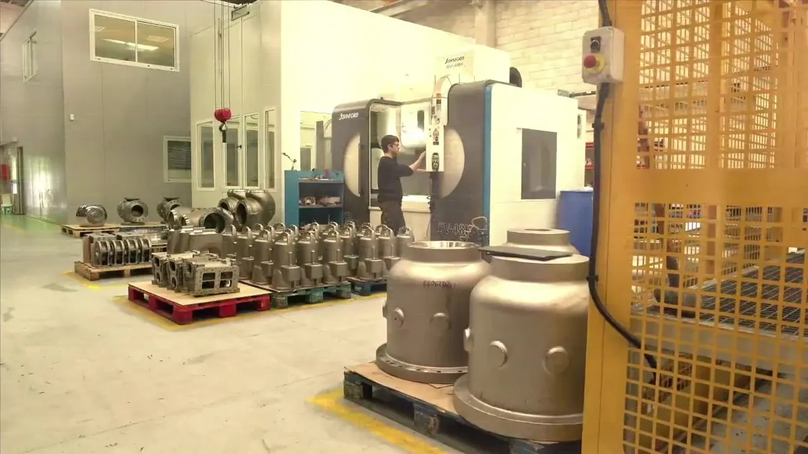
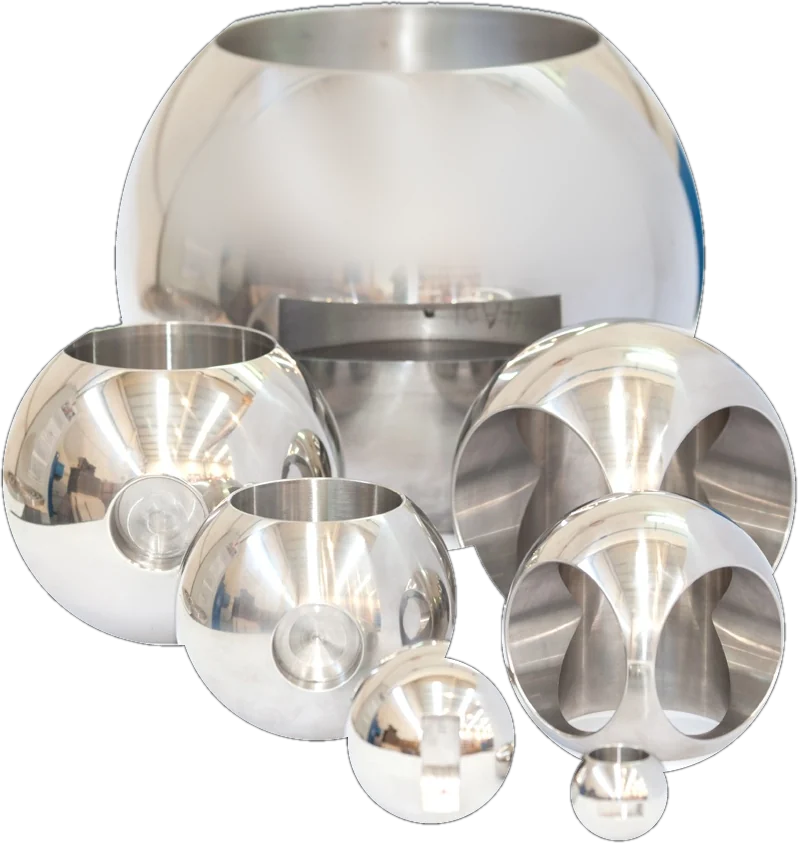
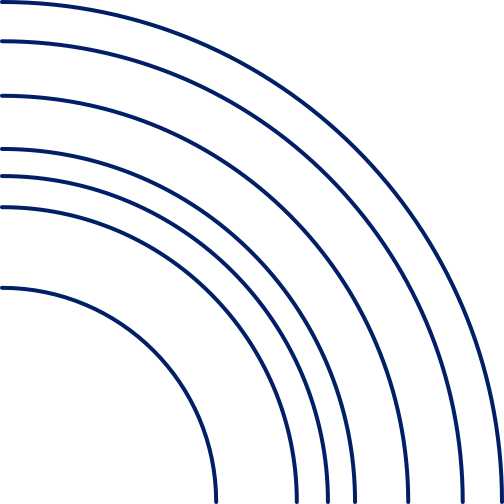

Mecanizado de alta precisión, ensayos y control de calidad.
Piezas de acero fundido a la carta, según plano y especificación del cliente. Mecanizado, inspección dimensional y ensayos en planta propia, con trazabilidad de cada pieza.

Planta de Lekunberri
Quiénes somos
AML Centrifugal Casting desarrolla su actividad desde 2012 en Lekunberri (Navarra), dedicada al mecanizado de precisión de piezas de acero fundido con tolerancias ajustadas, junto con su inspección dimensional y sus ensayos.
Trabajamos bajo pedido, desde unidades sueltas hasta series con entregas programadas, y adaptamos el proceso a los requisitos de cada cliente. Los planos y la documentación técnica de cada proyecto se tratan con estricta confidencialidad. Disponemos de trazabilidad completa de cada pieza a lo largo de todo el proceso. Contamos con presencia en el mercado nacional y una fuerte presencia internacional.
Cómo trabajamos
Del bruto a la expedición. Planta operativa 24 horas, en tres turnos. Cinco fases, todas en planta propia y con la pieza identificada en cada una.
- 01 Fundición Recepción e identificación de la pieza en bruto.
- 02 Mecanizado Mecanizado CNC según plano, con programación CAM en Siemens NX.
- 03 Control dimensional Medición e informe dimensional.
- 04 Ensayos Según los requisitos del pedido.
- 05 Expedición Documentación, embalaje y envío.
Capacidades
Mecanizado, inspección y ensayos en planta propia. Todo el proceso se realiza en nuestras instalaciones, según plano y especificación del cliente.
Ver máquinas y capacidades


Ensayos
Realizados en planta propia, según los requisitos del pedido.
- Pruebas de presión
- Líquidos penetrantes
- Pruebas de helio
Otros ensayos, bajo consulta.
Ver ensayos y certificacionesSistema de calidad
Control en cada fase, desde el plano hasta la expedición.
- Control dimensional en máquina tridimensional
- Plano globeado previo a fabricación
- Trazabilidad de cada pieza
- Según especificación del cliente
Sistema de gestión de la calidad certificado según ISO 9001

Sectores con los que trabajamos
Mecanizamos piezas para clientes de los siguientes sectores.
Ver todos los sectores- Petróleo y gasVálvulas, bombas y componentes para extracción, refino y transporte.
- NavalComponentes para buques e instalaciones marinas.
- NuclearComponentes para instalaciones nucleares con trazabilidad completa y ensayos.
- FerroviarioComponentes para material rodante e infraestructura ferroviaria.
- SanitarioPiezas para equipos del sector sanitario.
- IndustrialComponentes para maquinaria y equipos de proceso.
- EstructuralPiezas de acero fundido para estructuras y uniones.
- Otros sectoresConsultar
Materiales que mecanizamos
Aceros inoxidables, dúplex y al carbono, en estado fundido. Otras aleaciones, bajo consulta según plano y especificación del material.

EN 1.0619
EN 1.4308
EN 1.4408
EN 1.4470
EN 1.4469
Normas ASTM y equivalentes EN orientativos.
{{resumen}}
- {{m.codigo}} {{m.nombre}} {{m.norma}} {{m.en}}
No aparece en el listado. Trabajamos otras aleaciones según especificación: consúltenos.
Próximas ferias
Ferias en las que participaremos próximamente. Puede solicitar una reunión a través del formulario de contacto.
Ferias y reuniones| Fechas | Feria | Stand | |
|---|---|---|---|
| [DD al DD MES] | [Nombre de la feria][Ciudad, País], [sector] | Stand [nº] | Solicitar reunión |
| [DD al DD MES] | [Nombre de la feria][Ciudad, País], [sector] | Stand [nº] | Solicitar reunión |
| [DD al DD MES] | [Nombre de la feria][Ciudad, País], [sector] | Stand [nº] | Solicitar reunión |


Solicitud de información
Solicitudes de oferta, consultas técnicas y proveedores.
Acceso para transportistas